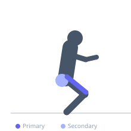

Exercise guide / Wall Sit
Wall Sit
The wall sit is an isometric lower body exercise in which the lifter holds a squat position with the back flat against a wall, thighs parallel to the floor, and knees at 90°. Because it requires no movement, it trains muscular endurance and time-under-tension of the quadriceps. It is used for rehabilitation, athletic conditioning, and as a simple test of quad endurance.
Primary muscles
rectus femoris
vastus lateralis
vastus medialis
vastus intermedius
Secondary muscles
gluteus maximus
Stabilizers
erector spinae
transverse abdominis
Equipment
No Equipment (Bodyweight)


Starting position
- Stand with your back flat against a smooth wall. Walk your feet forward until they are approximately 60–90 cm from the wall.
Setup
- Find a smooth, flat wall. Wear shoes with grip. The feet should be shoulder-width apart and directly below the knees when in position.
Steps
- Step 1: Slide your back down the wall until your thighs are parallel to the floor and your knees are at 90°.
- Step 2: Ensure your knees are directly over your ankles — not in front of them.
- Step 3: Keep your back flat against the wall throughout. Do not lean forward.
- Step 4: Hold the position for the target duration while breathing steadily.
- Step 5: To exit, slide back up the wall to standing or step forward.
Coaching cues
- Thighs parallel — don't cheat with a shallow squat
- Back flat to the wall at all times
- Breathe steadily — don't hold your breath
Breathing
- Breathe steadily throughout the hold. Do not hold the breath for extended durations — this increases blood pressure unnecessarily.
Range of motion
- Thighs must reach parallel to the floor. Anything shallower significantly reduces the training stimulus.
Tempo
- Isometric hold — measure in seconds or minutes rather than reps
Common mistakes
- Knees extending past the toes due to feet placed too close to the wall
- Back peeling away from the wall due to core fatigue
- Thighs not reaching parallel — reduces quad demand significantly
Safety
- Those with knee pain should check that knees track over toes and that feet are positioned appropriately
- Avoid performing to failure on a slippery floor
Training
- endurance: 1–1 reps
- endurance: 2–4 sets
- Rest: {'endurance': 60}